Dom d: novostavba v radovej zástavbe v obci Záborské
Záborské
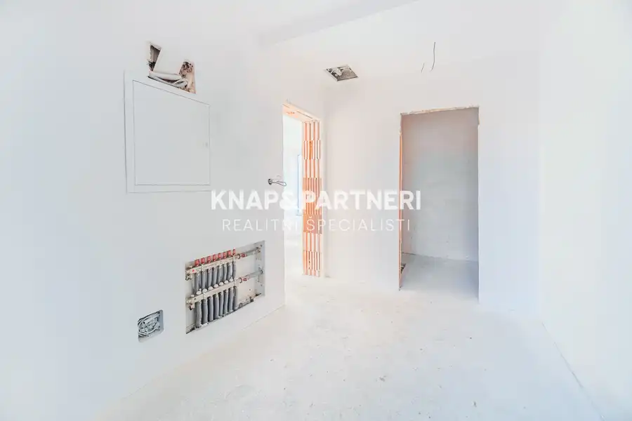
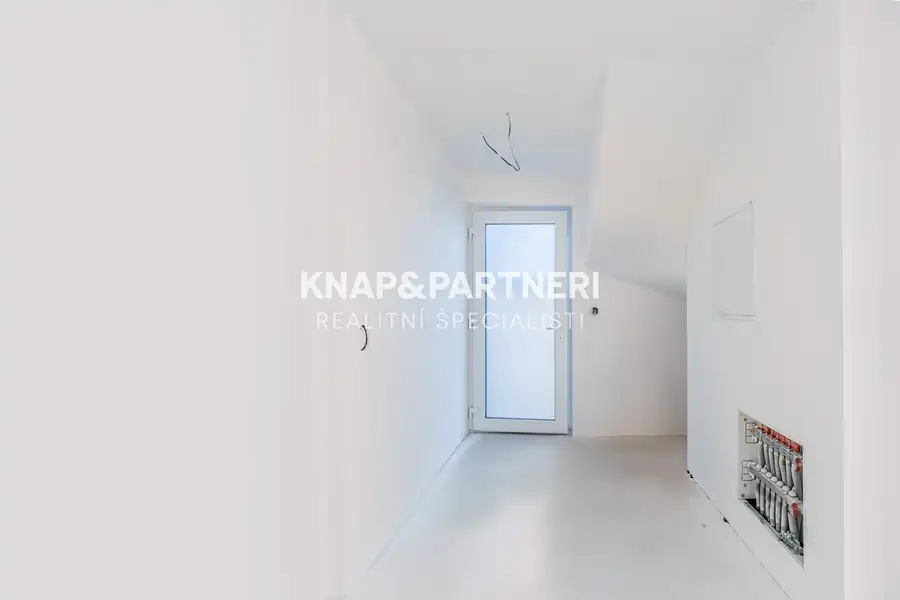
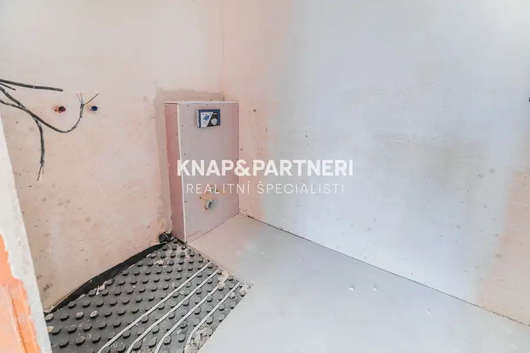
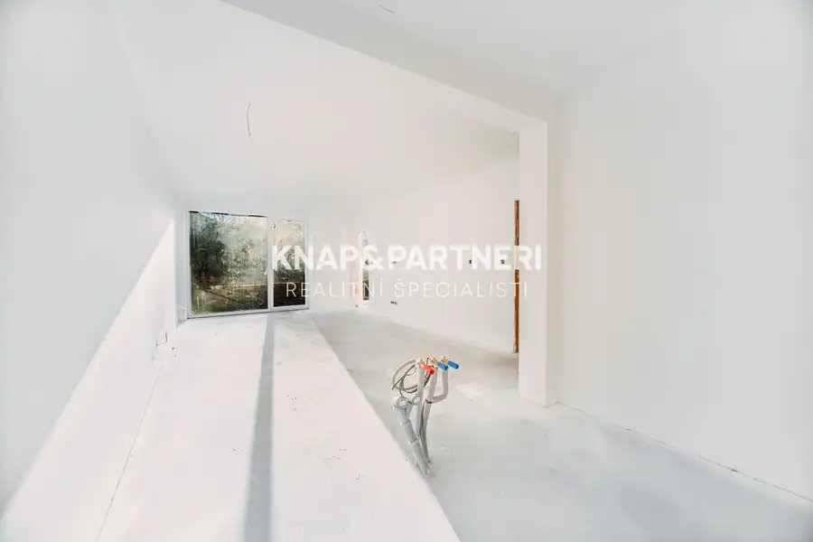
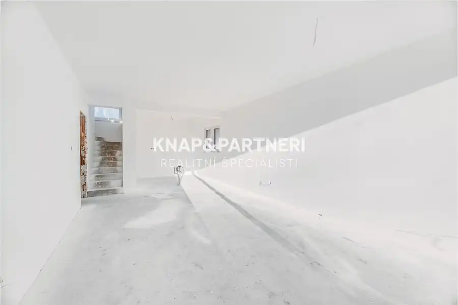
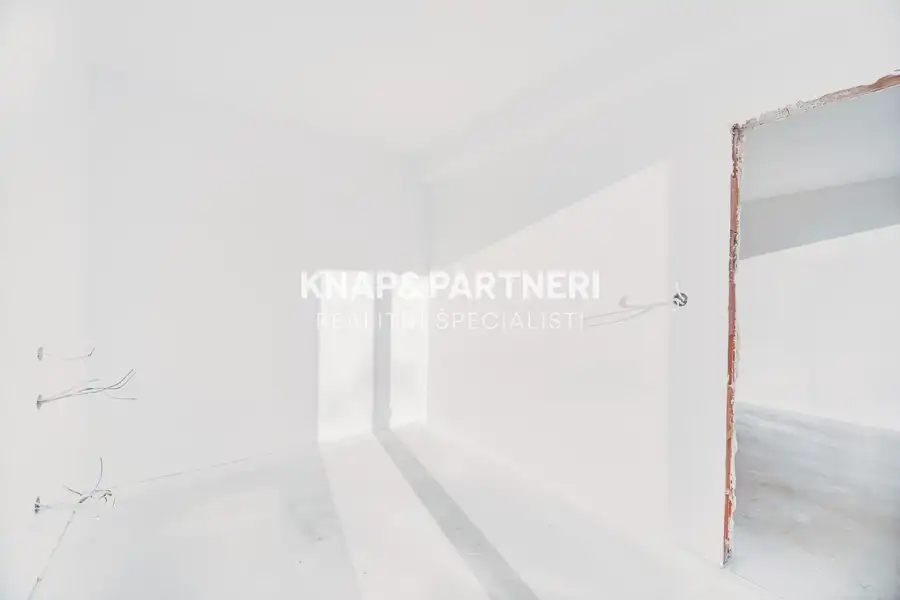
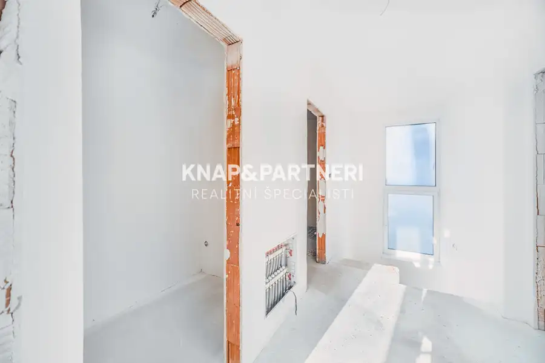
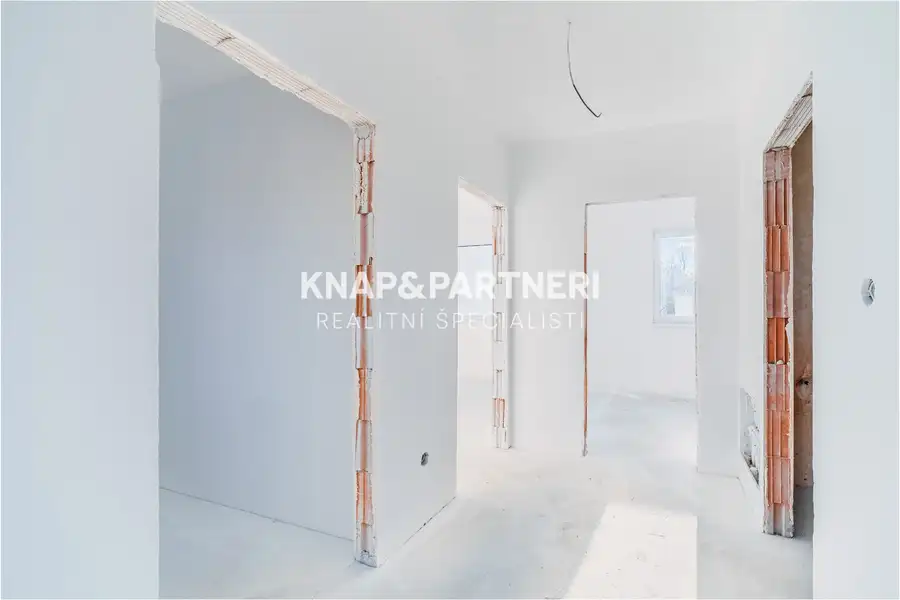
- Plocha119.3 m²
- StavVo výstavbe
- VlastníctvoOsobné
O nehnuteľnosti
Ak vás už nebaví život v byte, predstavujeme ideálnu alternatívu. S väčším priestorom, väčším množstvom súkromia, vlastnými parkovacími miestami, pozemkom a stále vo výbornej dostupnosti do mesta. Všetky tieto atribúty spĺňajú novostavby v radovej zástavbe 4 rodinných domov v Záborskom.► CELÚ PONUKU S VIDEOM SI POZRITE NA: https://bit.ly/zaborske-domDDom D, na ktorý sa práve pozeráte, ponúka:Pozemok s celkovou výmerou 305 m2- z čoho je záhrada 232 m2- a zastavaná plocha: 73 m2Úžitková plochu domu (bez terasy): 119,30 m2Obytná plocha: 78,2 m2Terasa: 21,4 m2Počet parkovacích miest: 2----------------------------DISPOZÍCIA DOMU:Prízemie - denná časť - chodba s úložnými priestormi, kuchyňa prepojená s obývacou izbou s výstupom na terasu, obytná izba / pracovňa, kúpeľňa s WCPoschodie - nočná časť - 3 obytné izby, kúpeľňa s WC a práčovňaDispozícia je praktická, bez hluchých, nevyužitých miest a vytvára tak v dome jasne oddlené zóny, ktoré patria iba obyvateľom domu a v ktorých, naopak, radi privítate návštevy. Počas teplejšej polovice roka jednoznačne oceníte aj veľkú terasu, ktorú si s prípadnými úpravami môžete dokonca užívať celoročne napríklad vo forme zimnej záhrady.Pozemok, ktorý máte k dispozícii dovolí spraviť si tu menšiu záhradku, výbeh pre domácich miláčikov, bazén či detský domček. Výmera záhrady 232 m2 so sebou prináša aj menšie nároky na údržbu pozemku.VYHOTOVENIE DOMU:Dom bude dokončený s hotovou fasádou, vnútornými omietkami a maľovaním, kúrením, tepelným čerpadlom, osadenými vstupnými dverami a oknami. Uvedená cena je za dom v stave holodom. Kompletne dokončený bude exteriér (dlažby pred domom, dlažba na terase, schody do domu, oplotený a vyrovnaný terén.V prípade záujmu o dokončenie domu do stavu štandard sa dopláca spolu 41 755€ (350€/m2 plochy domu). V rámci štandardu sú zahrnuté komplet podlahy a dlažba v dome, obklady a sanita v kúpeľni a WC, interiérové dvere, kľučky a kuchynská linka.Domy majú plochú strechu s PVC krytinou, obvodové tehlové murivo Porotherm ECO 25 a ECO 37,5, silikónovú fasádnu omietku so zateplením a vnútornú deliacu nosnú stenu medzi domami tvorí tehla Porotherm AKU Z 30. K tichému bývaniu prispejú plastové okná Rakystav s izolačným dvojsklom a pri výstupe na terasu posuvný systém HS portál.Vykurovanie je podlahové - vodné s tepelným čerpadlom. V pláne je aj predpríprava na lokálnu rekuperáciu. S dostupnými inžinierskymi sieťami (elektrina, vodovod, kanalizácia) budete mať postarané o pohodlné bývanie. Pripravená bude aj optika (Telekom).Dom prináša energetickú triedu A, čo sa premieta do nižších mesačných nákladov na energie. Tomu dopomáha aj úsporné tepelné čerpadlo, ktoré sa postará o vykurovanie a ohrev vody. Dom bude vybavený aj stropným chladením a oddelenými meračmi.Veľkou výhodou je využívanie dažďovej vody, ktorú pre vás efektívne zachytáva retenčná nádrž a nahromadená voda sa tak ďalej využíva na závlahu záhrady.Záborské je jednou z najbližších obcí k Prešovu, s pravidelným MHD spojením a základnou občianskou vybavenosťou (škôlka, potraviny, multifukčné ihrisko, obecná knižnica). Prešov aj Košice máte pár minút jazdy autom či autobusom. Dokončenie domov je plánované na apríl 2026, vrátane podania žiadosti o kolaudáciu.Neváhajte nás kontaktovať a dohodnúť si obhliadku tejto nehnuteľnosti na 0903 704 937, alebo emailom na knap@knapapartneri.sk
Parametre
- Druh
- Rodinný dom
- Druh domu
- Klasický dom
- Dátum zverejnenia
- 26. 02. 2026
- Energetický certifikát budovy
- nie je
- Plocha pozemku
- 305 m²
- Počet nadzemných podlaží
- 2
- Počet vonkajších parkovacích miest
- 2
- Rok kolaudácie
- 2026
- Rok výstavby
- 2025
- Stav nehnuteľnosti
- Vo výstavbe
- Terén pozemku
- Iný
- Typ
- Predaj
- Typ konštrukcie
- Tehlová
- Vlastníctvo
- Osobné
- Vybavenie
- Vonkajšie parkovacie miesto
- Vykurovanie
- Podlahové
- Zariadenie
- Holopriestor
- Zastavaná plocha
- 73 m²
- Úžitková plocha
- 119.3 m²
Kde to je


Mohlo by Vás zaujímať
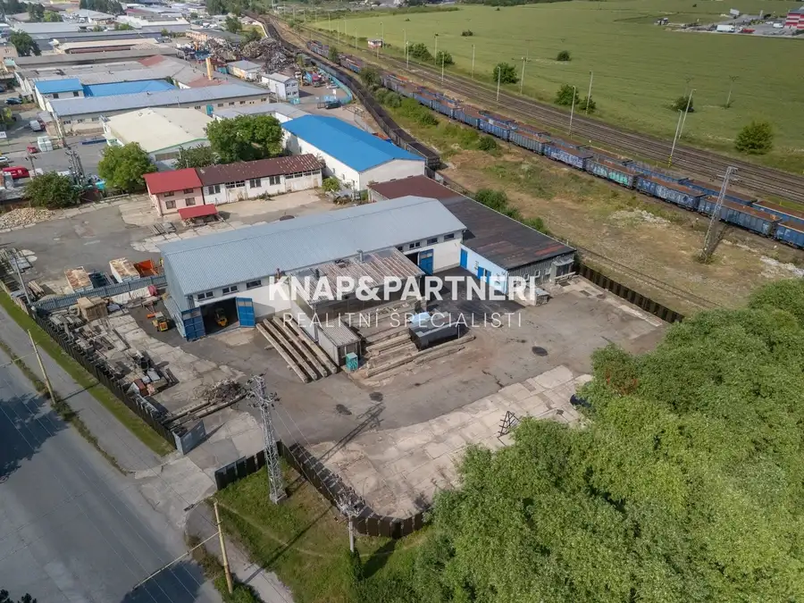
Komerčné priestoryNové 959 000 €Multifunkčná hala v priemyselnej zóne, strojnícka, Prešov - nižná Šebastová Prešov 1099 m²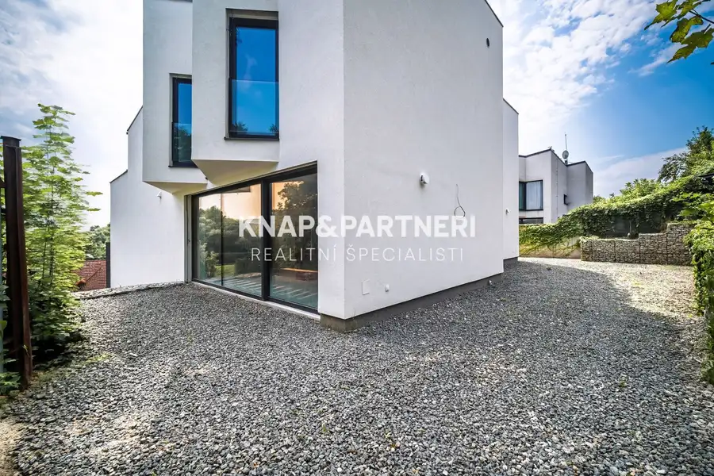
BytNové 355 000 €Novostavba, Amfik House, mezonetový 4 izbový byt „c“ s terasami, 217,58 m2, Prešov Prešov 4-izbový217.58 m²2. podlažie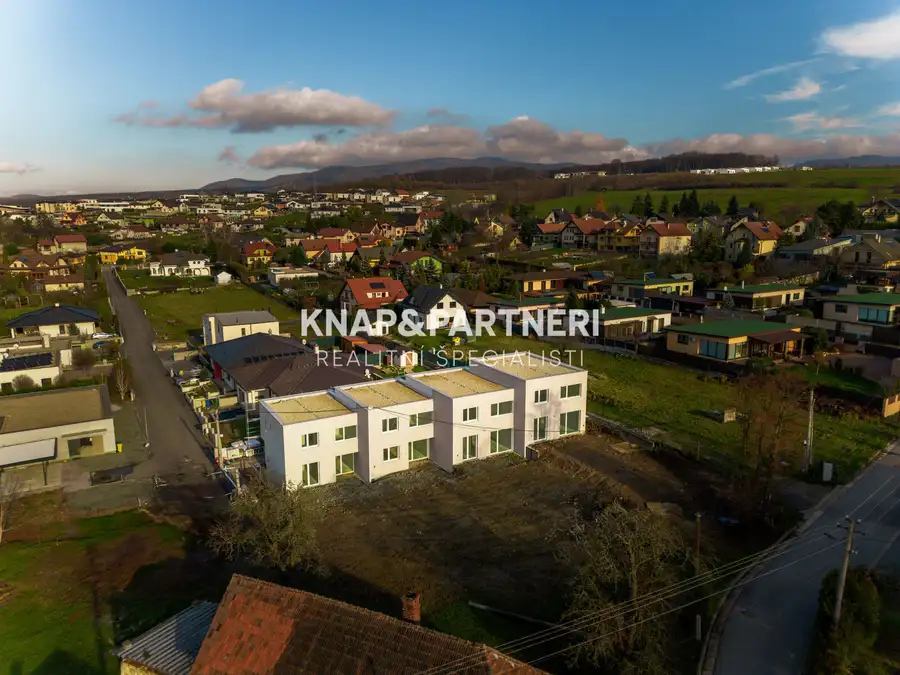
DomNové 245 500 €Novostavba v radovej zástavbe v obci Záborské: dom a Záborské 98.97 m²